Aprende a interpretar diagramas P&ID, comprender lazos de 4–20 mA y entender cómo se controla un proceso industrial con un método de 5 etapas.
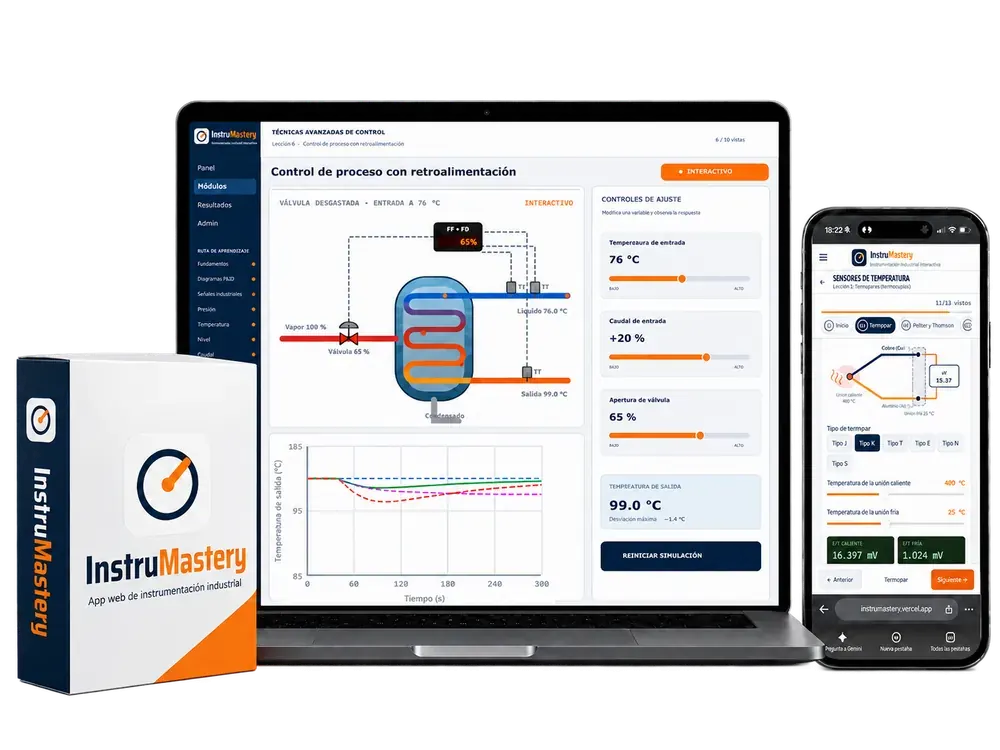
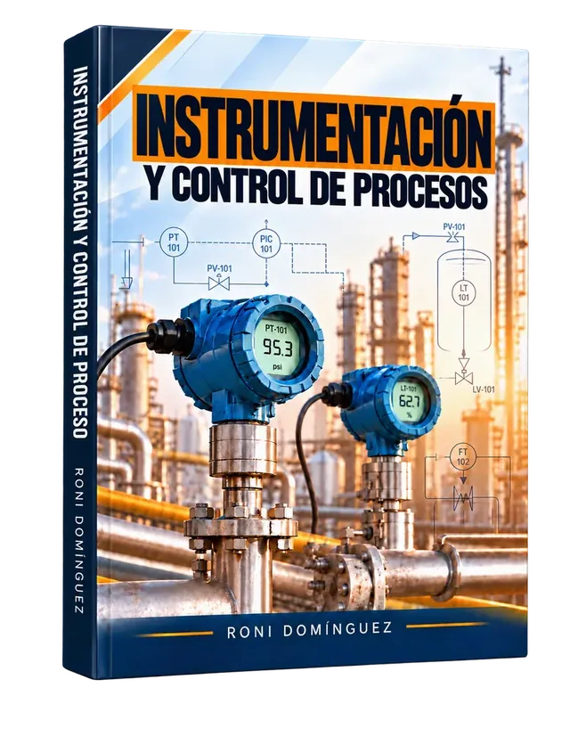
Descubre el manual ilustrado y la app interactiva que te ayudarán a comprender la instrumentación industrial desde cero.
Hay algo que ocurre cuando finalmente comprendes cómo funciona la instrumentación industrial.
Y es difícil explicarlo hasta que lo experimentas.
De repente…
Pero lo más interesante es cómo puedes llegar a ese punto.
Porque existe una secuencia que conecta prácticamente todo lo que necesitas comprender sobre instrumentación industrial.
Y cuando descubres esa conexión, comienzas a ver los instrumentos de una manera completamente diferente.
Déjame mostrarte a qué me refiero…↓
La instrumentación industrial forma parte de un sistema integral donde cada elemento cumple una función: qué sucede en el proceso, cómo se mide la variable, cómo se transmite la señal, cómo actúa el controlador y qué elemento final modifica el proceso. Todo apoyado en diagramas P&ID y en los fundamentos de calibración.
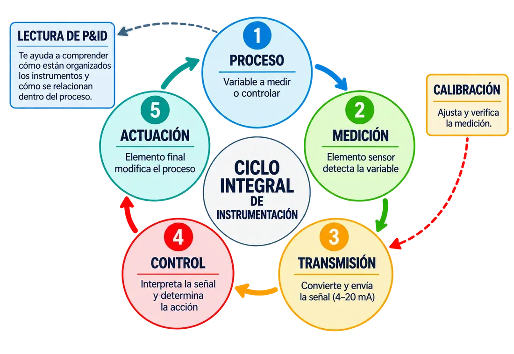
Un enfoque basado en seis preguntas fundamentales:
Porque no se trata de conocer instrumentos aislados, sino de comprender cómo trabajan juntos para medir y controlar un proceso industrial.
No es solo un manual. Es un sistema de aprendizaje de dos partes que trabajan juntas: el manual te explica cómo funciona la instrumentación industrial, y la app te permite practicarlo hasta que lo domines.
El recorrido completo por la instrumentación industrial, explicado paso a paso: desde el sensor que mide la variable hasta la válvula que corrige el proceso. Con lenguaje sencillo, ilustraciones claras y ejemplos reales de planta.
Mira algunas páginas por dentro:
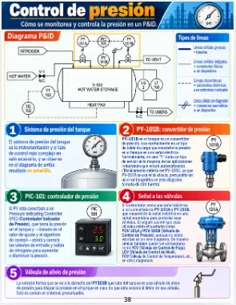
Control de presión en un P&ID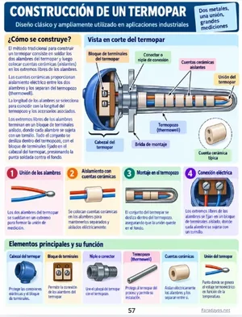
Construcción de un termopar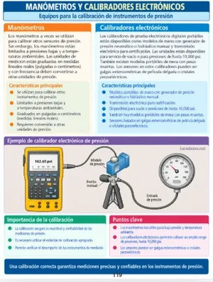
Manómetros y calibradores electrónicos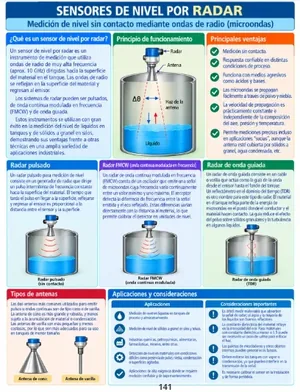
Sensores de nivel por radar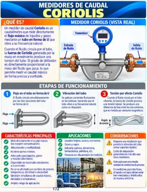
Medidores de caudal Coriolis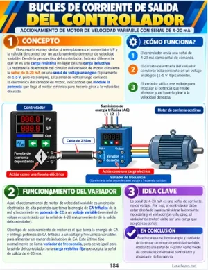
Bucles de corriente de salida del controlador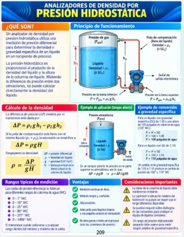
Analizadores de densidad por presión hidrostática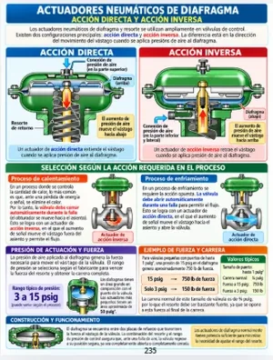
Actuadores neumáticos de diafragma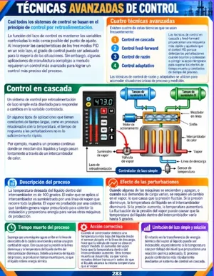
Técnicas avanzadas de controlTodo lo que vas a dominar:
Una app web con lecciones claras y precisas que usas desde tu computadora o tu celular, a tu ritmo.
Así se ve por dentro:
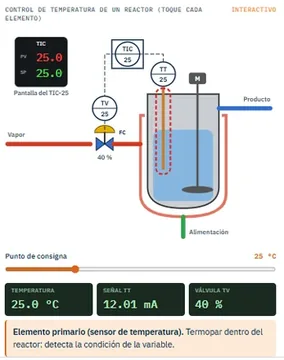
Control de temperatura de un reactor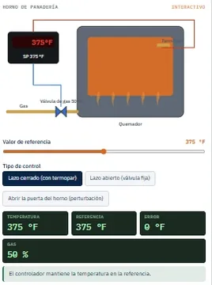
Horno: lazo abierto vs. cerrado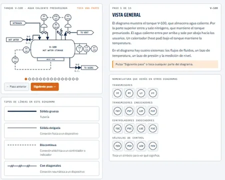
Lectura guiada de un P&ID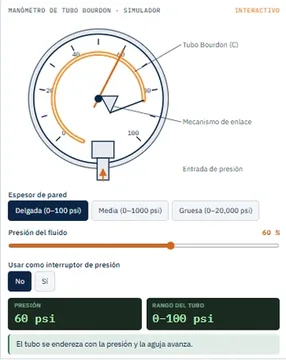
Manómetro de tubo Bourdon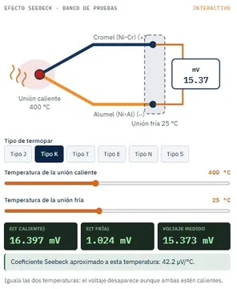
Efecto Seebeck en termopares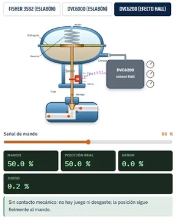
Posicionadores de válvula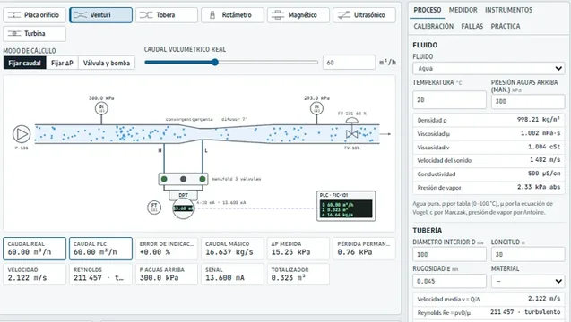
Medidores de caudal por ΔP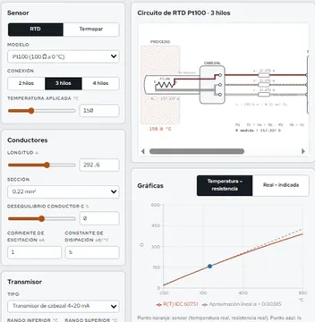
Circuito RTD Pt100 de 3 hilosRuta de aprendizaje de 11 módulos:
Medición
Comprende de una vez por todas cómo funcionan los transmisores de presión, temperatura, nivel y caudal, y las tecnologías que utilizan para medir las variables del proceso.
P&ID
Cómo interpretar diagramas P&ID industriales, incluso cuando parecen complicados, identificando instrumentos, conexiones y lazos de control.
Calibración
Cómo se calibra un transmisor de presión, temperatura, nivel o caudal, qué equipos se utilizan y cómo saber si sus errores están dentro de los límites permitidos.
Señales
Cómo detectar fallas en un lazo de 4–20 mA con un simple multímetro, y qué otras comprobaciones puedes hacer con un calibrador de lazo y comunicadores HART.
Conexión
Cómo conectar transmisores de 2, 3 y 4 hilos a PLC, controladores y variadores, entendiendo alimentación, cableado y señales para no dañar equipos.
Señales
Los 3 métodos para escalar señales de 4–20 mA y convertir una lectura de corriente en presión, temperatura, nivel o caudal.
Control
Qué sucede realmente cuando modificas P, I y D en un controlador, y cómo sintonizarlos para mejorar la respuesta y reducir oscilaciones.
HART
Cómo usar un comunicador HART para configurar, verificar y ajustar transmisores, qué parámetros revisar y cuándo corresponde calibrar.
Control
Los 7 sistemas de control fundamentales, cómo funcionan y en qué aplicaciones se usan para regular las variables de un proceso.
Medición local
Cómo funcionan los instrumentos de medición local en tanques, tuberías, calderas, reactores y hornos, sin necesidad de enviar señal al PLC.
Fundamentos
Los principios de física que necesitas para entender los instrumentos, explicados de forma sencilla y sin cálculos innecesarios.
Temperatura
RTD (PT100, PT1000), termopares y termistores: sus diferencias y cómo elegir la tecnología adecuada según el rango y la aplicación.
Calibración
Cómo comprobar un transmisor en 5 puntos (0, 25, 50, 75 y 100 %), calcular sus errores y saber si cumple las tolerancias.
Válvulas
Cómo funcionan las válvulas de control y sus actuadores neumáticos, y qué ocurre dentro cuando reciben la orden de abrir, cerrar o regular.
Nivel
Radar, ultrasonido y presión hidrostática: cuándo conviene cada tecnología según el tanque y el proceso… y qué errores evitar al seleccionar.
Caudal
Cómo elegir entre un medidor electromagnético, Coriolis o placa de orificio según el fluido y las condiciones del proceso.
Herramientas pensadas para que pases de la teoría a la planta desde el primer día.
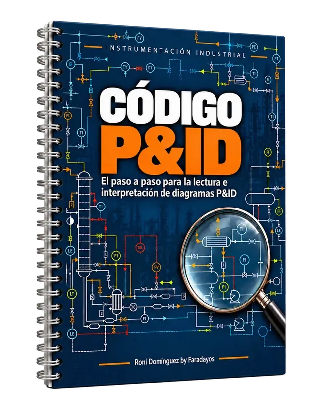
Deja de ver círculos y líneas. Aprende a leer un P&ID como un mapa de la planta, con un método de 5 pasos y 7 ejemplos de diagramas reales resueltos.
Valor: $27 USD · Hoy incluido
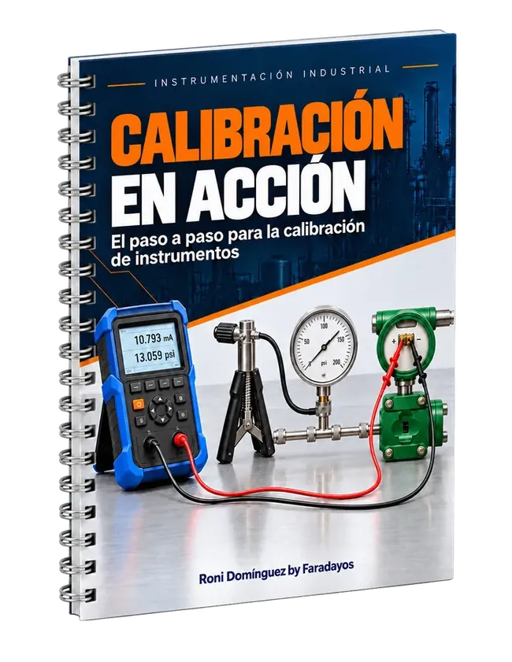
La guía práctica para calibrar con confianza: procedimientos reales paso a paso para los instrumentos más comunes en planta, con ejemplos, cálculos y registros listos para aplicar en tu trabajo.
Valor: $27 USD · Hoy incluido
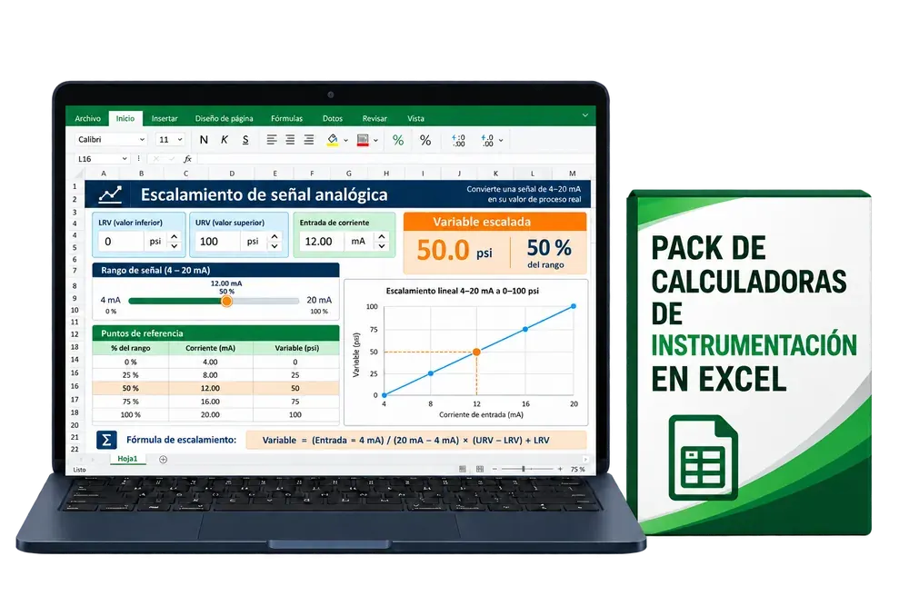
Resuelve en segundos los cálculos que haces en campo y en oficina: introduces los datos y la hoja te da el resultado al instante, sin fórmulas a mano ni errores de conversión.
Valor: $37 USD · Hoy incluido
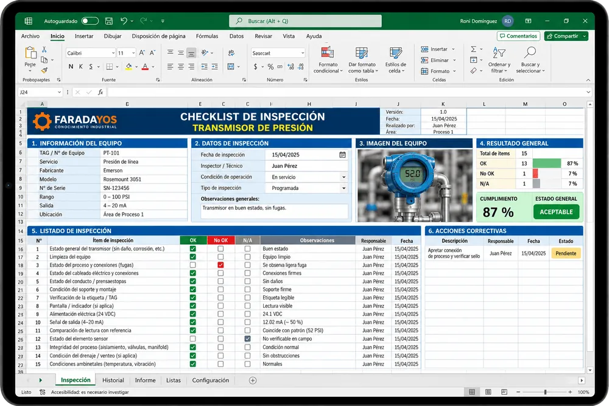
10 formatos en Excel listos para usar en campo: pones en servicio, inspeccionas y documentas cada instrumento con orden profesional, sin olvidar ningún punto y con un registro listo para entregar.
Valor: $19 USD · Hoy incluido
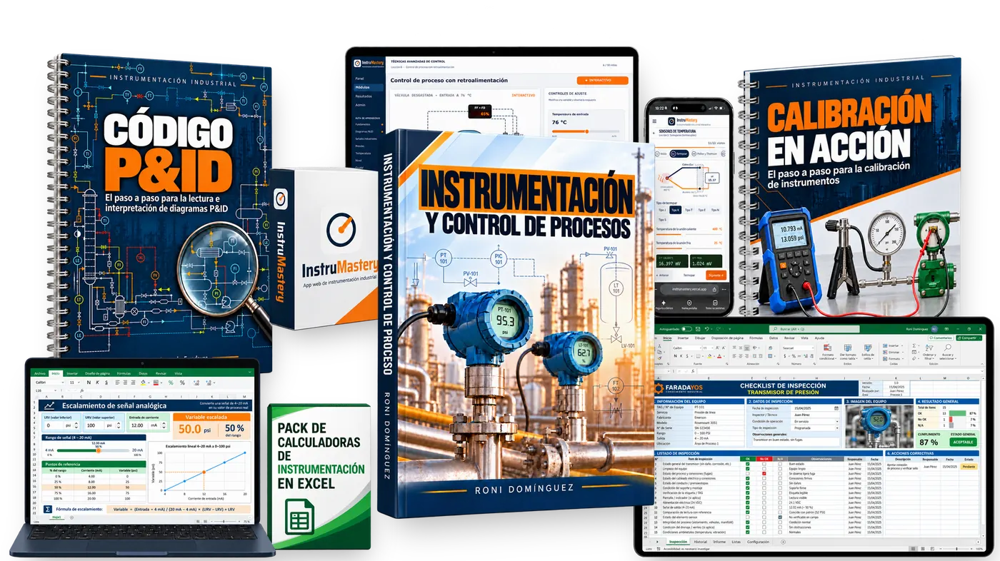
Revisa el manual y los bonos con calma. Si en los próximos 7 días sientes que no es para ti, escríbenos y te devolvemos el 100 % de tu dinero. Sin preguntas incómodas.
No. El manual parte desde cero y explica los conceptos con lenguaje sencillo e ilustraciones. Si ya tienes experiencia, te ayudará a unir las piezas sueltas.
Recibes el manual y los bonos en formato digital. Puedes leerlos en tu computadora, tablet o celular, e imprimirlos si lo prefieres.
Es una app web: entras desde el navegador de tu computadora o tu celular, sin instalar nada. Avanzas por 11 módulos con lecciones, simulaciones interactivas y un cuestionario al final de cada lección.
Porque leer te ayuda a entender el porqué, y practicar te ayuda a fijarlo. El manual te explica cada tema y la app te deja experimentarlo y comprobar que lo aprendiste.
Inmediatamente después de completar tu pago recibirás un correo con el acceso al manual, a la app InstruMastery y a todos los bonos.
No. Puedes comprender todo el contenido sin equipos. Si tienes un multímetro, podrás practicar las comprobaciones de lazos de 4–20 mA que se explican.
No. Se explican los principios de física necesarios de forma sencilla, sin complicarte con cálculos innecesarios. Las calculadoras en Excel te ayudan con lo numérico.
Tienes 7 días de garantía. Si no es para ti, te devolvemos tu dinero.
La próxima vez que estés frente a un transmisor, un controlador o una válvula, puedes seguir esperando que alguien te explique… o puedes ser tú quien sepa qué está pasando y por qué.